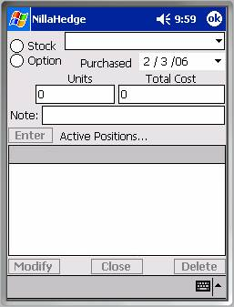
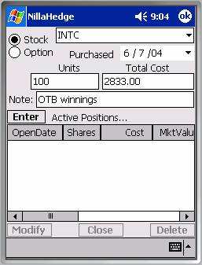
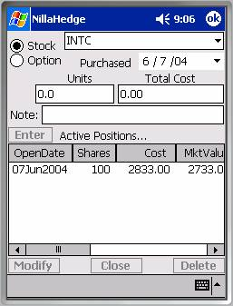
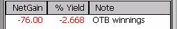
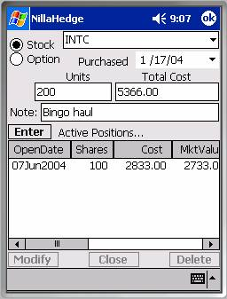
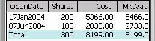
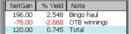

Position DialogsThere are three dialogs in NillaHedge that deal with positions, the Positions Dialog, the Portfolio Navigator, and the Positions Transcripts dialog. The Positions Dialog offers the opportunity to view or create the positions linked to a specific stock or option issue.
The Portfolio Navigator provides a top-down view of the entire portfolio, optionally expanding or collapsing branches in the hierarchy down to individual positions at the leaf level.
The Positions Transcripts dialog provides a text transcript equivalent to the leaf level in the Portfolio Navigator. The intent is to export these journal entries for review, tax records, and other documentary purposes.
The Positions Dialog
The Positions Dialog is where all positions in your portfolio are created. NillaHedge tries to anticipate which instrument type you’ll want to create positions for. If you haven’t defined any options or stocks, NillaHedge won’t be able to guess an instrument type, so it will initialize the Positions Dialog with the Symbol combo-box disabled and no selected value in the radio button group as shown above.

However, if you have defined some instruments, NillaHedge will select an instrument type based on the type you last defined, created a position for, or analyzed. For example, if you just defined a stock, the Positions Dialog will choose Stock in the radio button group and load the known stock symbols into the combo-box. In the next screen shot, we’ve selected Intel Corp (INTC) from that list and filled in values for Units
Note that all of the buttons that operate on the positions list (Enter, Modify, Close, and Delete) are disabled for an issue with no positions.
Option/Stock Radio Button Group
The Stock/Option radio button group controls which symbol table is loaded into the Symbol combo-box.
Symbol (Identifier)
When the instrument type radio button group is set to Option, the symbol combo-box selects option symbols. When the group is set to Stock, the symbol combo-box selects stock symbols.

Note that it’s not necessary to select a symbol from those already defined in the database. If you enter a new symbol, a placeholder instrument definition will be created for you, though NillaHedge will not make any assumptions about the issue’s current market price (e.g. based on the number of units purchased and their total cost). Using zero as the market price in the placeholder definition serves as a reminder that its value has never been set.Purchase Date
The current date is used as the default value for the Purchase date, but future dates are disabled, so it’s not possible to enter pro forma positions.
Number of Units (Options or Shares)
The number of units (options or shares) in a position is stored as a double precision floating point number. While fractions of an option don’t find much practical application, stock reinvestment plans often produce fractional shares of stock, hence the floating point representation. For short sales, specify the number of units as a negative number. Please note that the unit of measure for an options position is one option, not a contract consisting of 100 options. For example, if you buy 3 option contracts, you would enter 300 in the Units edit-box.
 Total Cost
Total Cost
Total Cost is also stored as a double precision floating point value. The presumption is that it represents the cost of the position including any

transaction fees. Note that the cost associated with a short sale should be negative, thus representing an inflow of capital after expenses.As an example, if you chose INTC as the stock symbol and enter 100 as the number of shares, the dialog calculates and enters the cost of the position based on the market price of INTC, as currently defined in the database. No fees are added at this point (that’s left for you to do manually). We’ll set the date back a year and add $100 to the total cost.

Note
The Note field is provided to document almost anything associated with the position – typically, the position’s source of the funds. We’ll adopt the source of funds convention and call the source ‘OTB winnings’.
Enter Button
Once a symbol has been entered and there are values for the number of shares and the total cost, the Enter button will be enabled.[1] As soon as an entry appears in the position list control (below the Enter button), the position has been saved in the database. Closing the dialog only discards the contents of the fields (above the Enter button) used to create a position.
Positions List
The position has been committed to the database and a row is added to the positions list for INTC to depict the current state of the database.
Note that the number of shares and the total cost fields now contain zeroes, the Note field has been cleared and the Enter button has been disabled.
Since INTC was defined previously with a market price of 27.33, the market value of the position reflects the number of shares times the market price of the stock. If we scroll to the right in the positions list, we can see some of the remaining columns in the list control. Since we added $100 to the cost of the position, the Capital Gain shows a loss of $100. INTC pays a $0.24 dividend once annually, so 100 shares of dividend income is displayed in the Income column. The Net Gain column merely sums the Capital Gain and Income column entries and the ‘% Yield’ column annualizes the Net Gain over the holding period.
If we scroll to the right, we can see the Note we entered above as our

source of funds.Let’s see what happens when we add another INTC position. We’ll change the date and buy 200 shares for $5366, including transaction fees, and note the purchase as being financed by a haul in a Bingo game.
 As before, the Enter button becomes
disabled, the Note is cleared, and the Units and Total Cost fields are zeroed
out. The Positions List now shows the
following contents:
As before, the Enter button becomes
disabled, the Note is cleared, and the Units and Total Cost fields are zeroed
out. The Positions List now shows the
following contents:

The ‘Bingo haul’ position has become the topmost position, showing a positive Net Gain and annualized yield. Obviously, positions need not be limited to outright purchases, they can just as easily be the result of dividend reinvestment.A Total row, highlighted in cyan, has been added to depict the sums for each of the columns - the exception being the ‘% Yield’ column – this Total row entry is the cost weighted average annualized yield of the contributing positions, so you can get immediate feedback on how well cost averaging is working for you. The total row is only visible when more than one position exists for the issue you’ve selected.
Positions List Columns
Column headings are generally self explanatory, so we’ll focus on a few things that may not be as readily apparent. First, the list control supports column resizing, reordering, and sorting (toggles between ascending and descending). If a total row is present, it is not included in the sort. Stocks with dividends generate income, so there’s a column displaying income when the radio button group selects Stock. The Net Gain column displays the sum of the Capital Gain and Income columns and is also only displayed for stocks. When the radio button group selects Option, you’ll find another column (assuming its enabled) just to the left of the Note column displaying the exercise value of the position.
You’ll note that the second column (when the Purchase Date and Options/Shares preferences are both enabled) changes its name to reflect what sort of units the position represents.
 Managing Display of the Positions
List
Managing Display of the Positions
List
Clearly, you can’t see the contents of all columns without scrolling the Positions List horizontally, but you can disable the display of any of the columns in the Positions List Options dialog, thus reducing the need to scroll horizontally.
Managing the Contents of the Positions List
The three buttons below the Positions List allow you to manage the list of positions displayed above. If you select one of the positions in the list, you’ll see the row highlight and the three buttons at the bottom of the screen become enabled. You may notice that you can’t select the total row – it’s not a real position, just a summary entry in the list control.
Here’s what happens when you select one of the three buttons at the bottom of the dialog.
 Delete
Delete
The Delete button is the simplest of the three. Selecting it causes the message box at right to post over the dialog. [2] If you click ‘Yes’, it will disappear from the database forever. The Delete button is the only one of the three bottom buttons that supports multiple selections.
Modify
The Modify button is very much like the Delete button, in that it warns you that you are about to delete the selected position, and once you select ‘Yes’, the position will be permanently deleted from the database, just as it promised.[3] The difference is that Modify overwrites, without asking permission, all of the fields in the dialog with values taken from the position you are ‘modifying’. Clearly, you shouldn’t use the Modify button if you have typed information into the fields above the Enter button that you care about.
After you complete your modifications, you must re-Enter the position in the database. Until it appears in the Positions List below the Enter button, it’s not saved in the database – that’s why the warning message says “you are about to permanently delete the selected position” when you just selected Modify.
 Close
Close
The Close button also has irreversible consequences, but it does not have an associated preference in the Confirmation Options Dialog because it needs to capture additional information along with your approval to proceed. The Close Position Dialog completely overlays the Positions Dialog and collects three things from you which enable converting it into a closed position. The date the position was closed, the net proceeds from the sale, and a closing note. The closing date can be no later than the current date. Upon selecting the ‘OK’ button, a ‘closed position’ is created in the database with all of the information previously associated with the active (open) position; the active (open) position is then deleted.
There is no mechanism for modifying a closed position – it can’t be deleted, modified, or converted back into an active (open) position, but you can get transcripts of all closed positions according to the year in which they were closed (see the Positions Transcripts Dialog on the Tools menu).